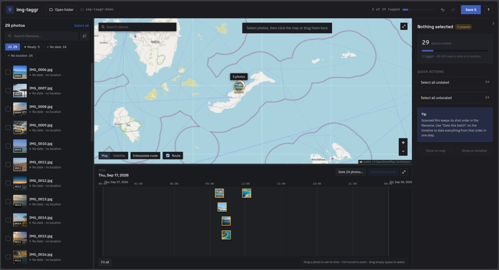
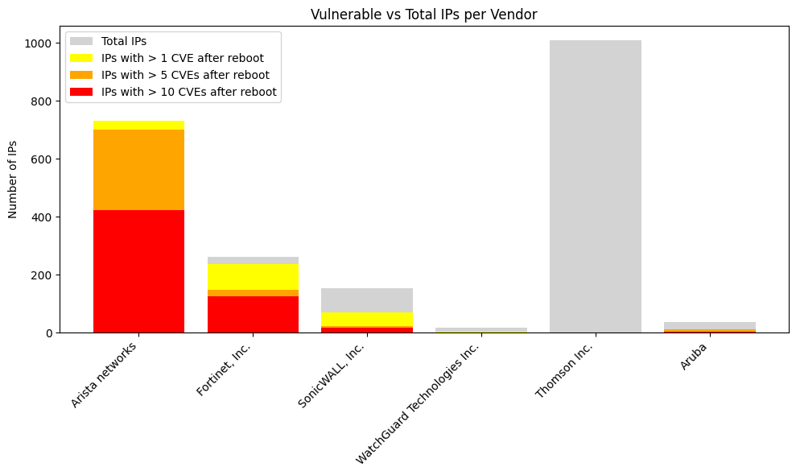
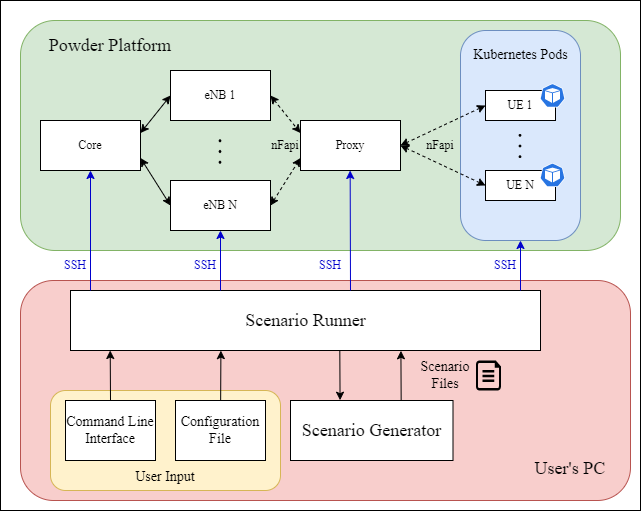
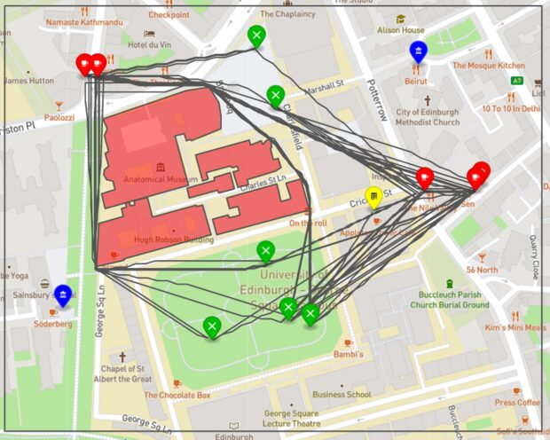
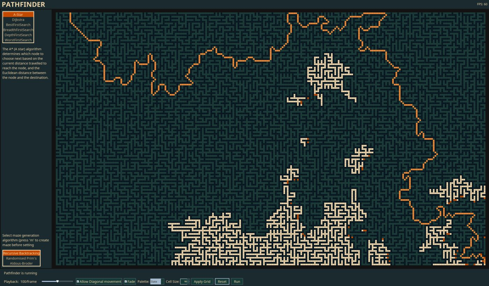

~/profile
Ioulios Patmanidis
I am a software engineer working on systems security. My MSc thesis added PKU-based
in-process isolation to a Linux system call interposer, and that work fed into two
co-authored research papers. I also build tools and renderers in C++, Python, Java and Rust.
MSc Computer Science (Cum Laude), TU Delft, 2026
BEng Electronics and Computer Science (First Class Honours), University of Edinburgh, 2023
github
email
~/projects
./iso-k23
ISO-K23
MSc thesis. Extends K23, a user-space system call interposer, with Intel PKU isolation so the
application it monitors cannot tamper with the interposer's own code, stacks, heap and
thread-local state. Blocks all 56 proof-of-concept attacks in its test suite and stays within
10% of native throughput on nginx, lighttpd, Redis, Memcached, SQLite and Nanomsg.
C · C++ · x86-64 · Linux · Intel PKU
code private for now
./3d-visualizer
3d-visualizer
Renderer for 3D scalar volumes and 2D time-varying vector fields. Supports raycast slicing,
MIP, isosurfaces and transfer-function compositing, accelerated with empty-space skipping and
volume bricking, plus streamlines and line integral convolution for flow data. One C++ codebase
runs natively and in the browser through WebAssembly and WebGL2.
C++ · OpenGL · WebGL2 · GLSL · Emscripten
live demo
./img-taggr
img-taggr
Photo metadata editor. Place photos on a map and a timeline to set date, time and location
for a whole folder at once. A single Rust engine runs in the browser through WebAssembly and
on the desktop through Tauri. Photos never leave the machine.

Rust · WebAssembly · Tauri · JavaScript
live demo
repo
./snmpv3-survey
SNMPv3 exposure survey
Group project for the TU Delft Hacking Lab. Scanned the Dutch IPv4 space and found about 7,600
hosts exposing SNMPv3. The unauthenticated discovery exchange leaks vendor and uptime, which
let us attribute about 6,100 hosts to 63 vendors and estimate how many CVEs each device has
missed since its last reboot.

Python · ZMap · tshark · NIST CVE API
repo
./scengen
ScenGen
BEng thesis. Generates and runs 4G LTE emulation experiments on the POWDER testbed from a YAML
description of eNBs, UE mobility and traffic. I extended the OpenAirInterface UE and the
multi-UE proxy to support controlled X2 handovers across multiple eNBs.

Python · C · C++ · OpenAirInterface · Kubernetes
proxy
oai fork
k8s deployment
powder profile
./drone-controller
Drone delivery controller
Route planner for a simulated food delivery drone, using Theta* any-angle pathfinding around
no-fly zones. Reordering pickups and prioritising higher-value orders raised delivered value
from about 96% to 99%. Outputs flight paths as GeoJSON.

Java · Maven · Apache Derby · GeoJSON
repo
./pathfinder
Pathfinder
Desktop visualizer for pathfinding and maze generation. Draw walls or generate a maze, then
watch A*, Dijkstra, BFS, DFS, best-first or worst-first search explore the grid.

Java · Swing · Gradle
repo